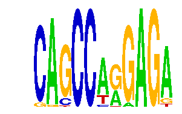

family_20 |
|---|
|  |
| Download PWM |
| Download instances (motifs) |
| Show motif distribution |
Query_ID | Query_Consensus | Subject_Name | Source_DB | Subject_ID | Length | Orientation | Offset | Divergence | Overlap | Subject_Consensus |
|---|---|---|---|---|---|---|---|---|---|---|
| family_20 | CAGCCAGGAGA | Mafb | JASPAR | MA0117.1 | 8 | reverse-complement | -4 | 0.628 | 4 | GCTGACNN |
Sequence | Start_position (from start) | Start_position (from end) | Average conservation | Best conservation score | Instance_with_best_CS | Best_Z-score | Instance_with_best_ZS | Strand |
|---|---|---|---|---|---|---|---|---|
| chr8:59876300-59877796 | 975 | 986 | 0.407727 | 0.452 | CAGCCARGAGR | 12.722097 | CAGCCARRAGA | 1 |
| chr4:133849659-133851500 | 9 | 20 | 0.905273 | 0.974 | CAGCCMRGAGA | 16.888458 | CRGCCARGAGA | 1 |
| chr11:54874000-54877200 | 516 | 527 | 0.0173636 | 0.021 | CAGCCWRGAGA | 18.642365 | CAGCCWRGAGA | -1 |
| chr17:26750400-26752100 | 1543 | 1554 | 0.429273 | 0.878 | CAGCCANGAGA | 14.438022 | CAGCCANGAGA | 1 |
| chr9:67095100-67096114 | 356 | 367 | 0.00245455 | 0.006 | CAGCCARGAGR | 15.956948 | CAGCCARGAGR | 1 |
| chr2:156449700-156452800 | 1391 | 1402 | 0.00209091 | 0.006 | CAGCCWRGAGA | 18.642365 | CAGCCWRGAGA | -1 |
| chr10:53044723-53046400 | 236 | 247 | 0.46 | 0.902 | CAGCCARRAGA | 12.722097 | CAGCCARRAGA | 1 |
| chr3:101340000-101341300 | 424 | 435 | 0.876455 | 0.977 | CAGCCWRGAGA | 18.642365 | CAGCCWRGAGA | 1 |
| chr2:165946800-165949700 | 2415 | 2426 | 0.0162727 | 0.02 | SAGCCARGAGA | 15.956948 | CAGCCARGAGW | 1 |
| chr10:52896500-52897547 | 264 | 275 | 0.0228182 | 0.169 | CASCCARGAGA | 14.438022 | CAGCCANGAGA | 1 |
| chr12:25977100-25978350 | 179 | 190 | 0.000727273 | 0.002 | SAGCCARGAGA | 12.745775 | SAGCCARGAGA | -1 |
| chr18:5073600-5077590 | 3836 | 3847 | 0.899091 | 0.965 | CAGCCWRGAGA | 18.642365 | CAGCCWRGAGA | 1 |
| chr5:148606000-148607137 | 418 | 429 | 0.00263636 | 0.006 | CAGCCARGAGW | 15.956948 | CAGCCARGAGW | 1 |
| chr13:12375500-12377600 | 795 | 806 | 0.008 | 0.023 | CAKCCARGAGA | 14.438022 | CAKCCARGAGA | 1 |
| chr13:29792600-29793845 | 236 | 247 | 0.00618182 | 0.016 | CAGCCARRAGA | 12.722097 | CAGCCARRAGA | 1 |
| chr11:54886300-54887700 | 749 | 760 | 0.033 | 0.089 | CAGCCWRGAGA | 14.438022 | CAGCCMRGAGA | 1 |
| chr2:166027700-166030700 | 1993 | 2004 | 0.00654545 | 0.013 | CRGCCARGAGA | 14.438022 | CAGCCMRGAGA | 1 |
| chr17:71344800-71347124 | 4 | 15 | 0.0227273 | 0.027 | SAGCCARGAGA | 12.745775 | SAGCCARGAGA | 1 |
| chr8:13215985-13217500 | 620 | 631 | 0.00766667 | 0.014 | CAGCCARGAGW | 15.956948 | CAGCCARGAGW | 1 |
| chr1:43215700-43218157 | 791 | 802 | 0.0198182 | 0.03 | CAGCCANGAGA | 20.39627 | CASCCARGAGA | 1 |
| chr9:66881000-66882300 | 888 | 899 | 0.0721818 | 0.243 | CRGCCARGAGA | 16.888458 | CRGCCARGAGA | 1 |
| chr13:29281700-29283800 | 1793 | 1804 | 0.00218182 | 0.004 | CASCCARGAGA | 20.39627 | CASCCARGAGA | -1 |
| chr7:148085400-148087600 | 1799 | 1810 | 0.00245455 | 0.008 | CAGCCMRGAGA | 14.438022 | CAGCCMRGAGA | 1 |
| chr8:64399000-64401110 | 524 | 535 | 0.203273 | 0.225 | CASCCARGAGA | 20.39627 | CASCCARGAGA | 1 |
| chr17:80563200-80565455 | 188 | 199 | 0.00263636 | 0.008 | SAGCCARGAGA | 15.956948 | CAGCCARGAGW | 1 |
| chr5:123007200-123008923 | 1010 | 1021 | 0.00481818 | 0.007 | CAGCCMRGAGA | 14.438022 | CAGCCMRGAGA | -1 |
| chr2:68052000-68054200 | 763 | 774 | 0.00645455 | 0.012 | CASCCARGAGA | 20.39627 | CASCCARGAGA | 1 |
| chr1:51209389-51210389 | 647 | 658 | 0.00554545 | 0.022 | CAGCCWRGAGA | 18.642365 | CAGCCWRGAGA | -1 |
| chr14:102193534-102195300 | 1228 | 1239 | 0.000909091 | 0.002 | CASCCARGAGA | 20.39627 | CASCCARGAGA | 1 |
| chr1:43293900-43297200 | 1532 | 1543 | 0.317727 | 0.819 | CAGCCARGAGR | 15.956948 | CAGCCARGAGR | 1 |
| chr2:156449700-156452800 | 1173 | 1184 | 0.00127273 | 0.006 | CAGCCARGAGR | 15.956948 | CAGCCARGAGR | -1 |